Tactical shooter on Vampyuyu
ValoBlock
Five against five. One team carries the Rift Seed, the other seals it. Eight agents from the Realms of Aethelgard, real 3D weapons, and three maps that each change how you play.
play.vampyuyu.winFree on Java Edition 26.3. The server sends the ValoBlock pack when you join a match and removes it when you leave.
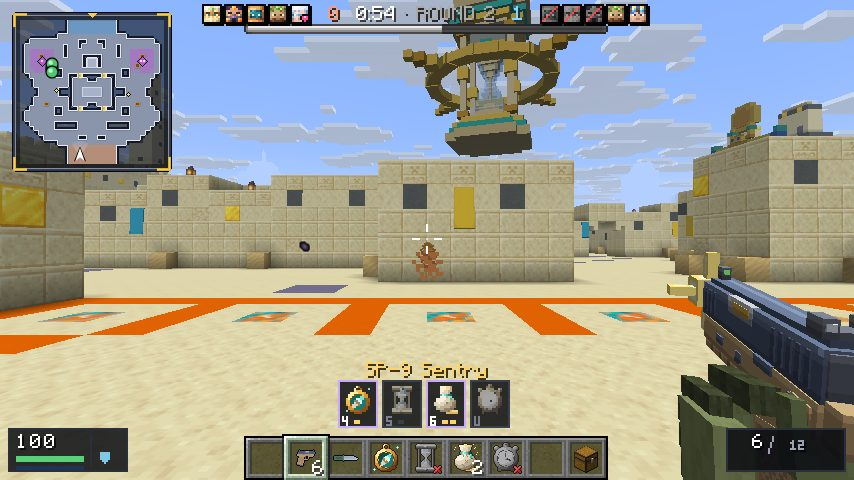
One round, three phases
Seedbearers attack, Sealers defend. First team to 7 rounds wins; sides swap after round 6.
- 1Pick an agent60 seconds to lock one of eight agents. An empty seat is taken by a bot.
- 2Buy25 seconds in the Armory to spend your Shards on guns, shields and abilities.
- 3Fight100 seconds. Plant the Rift Seed on site A or B, or stop the team that carries it.
The Rift Seed
Hold to plant it for 4 seconds. Once it is in the ground the fuse burns for 40 seconds, and the Sealers need 7 seconds to seal it, with a checkpoint halfway.
5 vs 5First to 7100 HP, shields up to 50Bots fill empty seats
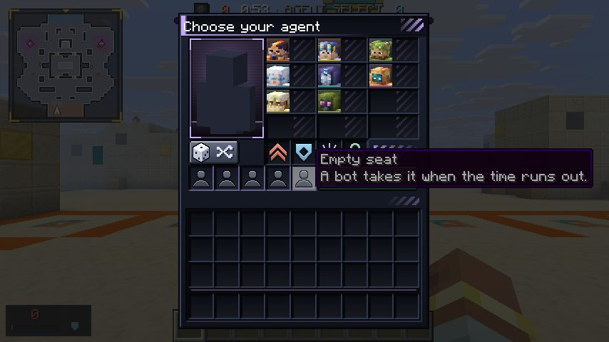
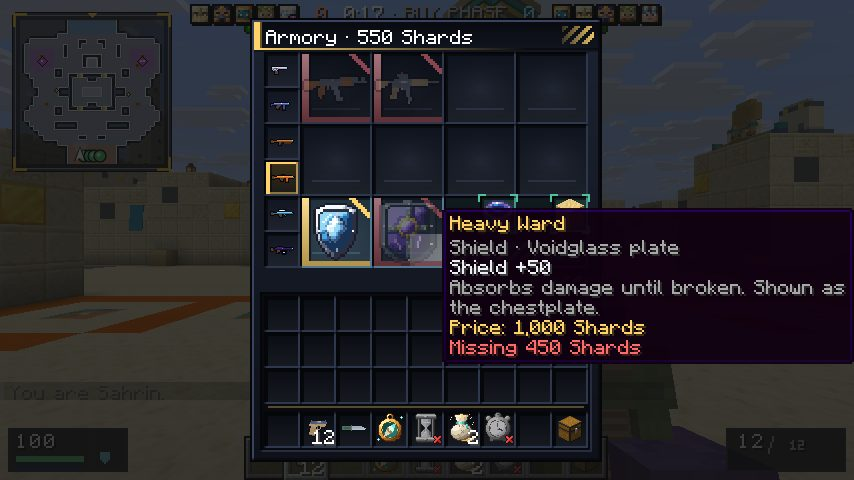
Eight agents, four roles
Each agent comes from one of the eight Realms of Aethelgard and carries four abilities: two bought each round, a free signature, and an ultimate that charges up.
- VanguardOpens the site, takes the first duel.
- WardenHolds ground, slows pushes, anchors a site.
- SeerFinds enemies before anyone sees them.
- WeaverCuts sightlines with smokes and zones.
-
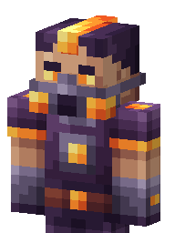
Cinder
Vanguard · Cracked Ashes
"The Colossus taught me: keep moving or cool down."
- Slag PotThrown pot. A magma pool for 6 s, 30 damage per second.
- Heat Shimmer6 s of Speed I and silent footsteps.
- Ember DashShort dash leaving a 3 s fire trail. Recharges after 2 kills.
- Colossus StepLeap and slam: knockback ring, 60 damage at the centre.
-
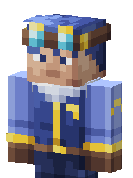
Gale
Vanguard · Tempestuous Archipelago
"The wind always finds a door. I just follow it."
- Wind PadPlaces an Archipelago wind pad: anyone who steps on it is launched. 20 s.
- Static OrbBouncing orb. On its second bounce it flashes everyone facing it.
- Charged SlideLow slide under fire; reload is instant during it. Recharges after 2 kills.
- Storm CallMarks 3 spots. Lightning hits each after 1.5 s for 90 damage.
-
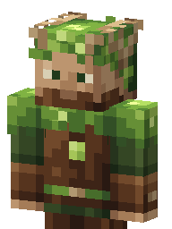
Thorn
Warden · Whispering Grove
"Roots remember every footstep."
- Root SnareHidden tripwire. The first enemy through is slowed and revealed.
- Spore MendSpore zone: 40 HP over 4 s to anyone inside.
- Bark WallA 5-wide wooden wall for 12 s. Breakable by gunfire.
- OvergrowthVines cover the site for 10 s. Enemies who touch them are slowed and revealed.
-
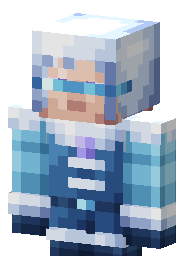
Rime
Warden · Frozen Heights
"Hold still. I will hold it for you."
- Frost MineProximity mine: Slowness II for 4 s.
- Stasis PaneAn ice pane that stops 3 bullets, then shatters.
- Hold the MomentFreeze yourself for 2 s: no damage taken, no action.
- Glacial HourA 12-block dome for 8 s: enemies inside are slowed and cannot reload.
-
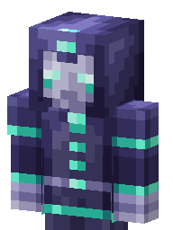
Vesper
Seer · Ethereal Necropolis
"The dead tell me where the living hide."
- Echo StepA ghost of you walks forward. Whoever shoots it is revealed.
- JudgmentSoul flare. Blinds every player looking at it for 1.5 s.
- Soul LanternPlaced lantern pulses twice; enemies inside glow for 3 s.
- VerdictEvery enemy glows through walls for 4 s.
-
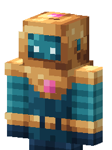
Nacre
Seer · Abyssal Depths
"Down there, you learn to listen."
- Ink BurstShort black cloud that blinds and muffles footsteps inside it.
- Pressure BubbleA dome that pushes players out for 4 s. Good for breaking a seal.
- Sonar PearlThrown pearl. One sonar ring reveals enemies within 12 blocks.
- Undertow8 s field that drags enemies toward its centre.
-
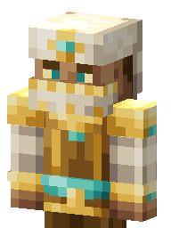
Sahrin
Weaver · Citadel of Golden Sands
"Time is a wall, if you stack it right."
- RewindMarks your position. Return to it any time in the next 8 s.
- Hourglass TrapSand zone that slows and reveals whoever walks in.
- Sand VeilThrown at range: a 15 s sand cloud that blocks sight. Grains rise upward.
- Time TideAllies in a wide area: Speed I and reload x1.5 for 8 s.
-
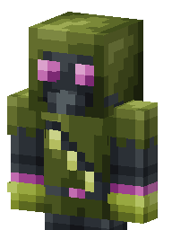
Murk
Weaver · Putrid Marshes
"Breathe in. You will stop soon."
- Leech PoolPuddle: slows and drains 10 HP per second, never below 1.
- Rot CloudSmall poison cloud, 10 s. Blocks sight.
- Miasma WallA long gas wall Murk switches on and off. Fuel refills between rounds.
- Bog TideThe marsh spreads in a cone: enemies inside are slowed and revealed to Murk.
The Armory
Fifteen items, each a real 3D model with its own sound, recoil and range. Prices are in Shards, the match currency: nothing carries over between matches.
 AR-77 Tempest
AR-77 Tempest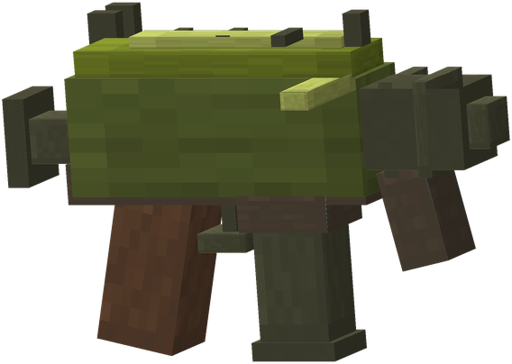
MX-7 Hornet R-454 Undertaker
R-454 Undertaker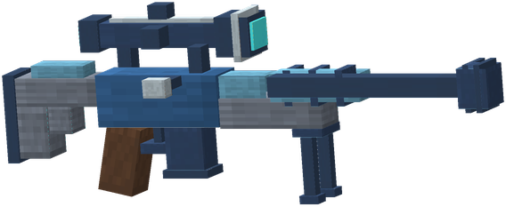
HX-50 Sovereign
Shards
800 Shards on the pistol round. A won round pays 3,000, a lost one 1,900 to 2,900 as the losses pile up. +200 per kill, +300 to the team for a plant. Capped at 9,000.
Sidearms
| SP-9 Sentry | Pistol | free | Everyone spawns with it. Sneak for a tight first shot. |
|---|---|---|---|
| BX-3 Ratchet | Burst pistol | 500 Shards | Three-round burst on each click. Strong at close range, weak past 20 blocks. |
| R-454 Undertaker | Revolver | 800 Shards | One headshot kills an unshielded player. Rings a bell sound on a kill. |
Primary weapons
| MX-7 Hornet | SMG | 900 Shards | Fastest fire rate, worst range. A buy for saving rounds. |
|---|---|---|---|
| KR-45 Vesper | SMG | 1,600 Shards | Accurate while moving. The anti-rush gun for Sealers. |
| PX-12 Breacher | Pump shotgun | 1,000 Shards | 8 pellets. One-shot up close, useless past 10 blocks. |
| AS-20 Mauler | Auto shotgun | 1,850 Shards | Holds a corner. Each pellet slows the target a little. |
| TR-16 Lancer | Rifle, semi-auto | 2,100 Shards | Tap-fire rifle. Two headshots, perfect first shot, little recoil. |
| AR-77 Tempest | Rifle, full auto | 2,900 Shards | The recoil climbs, then drifts right. |
| DM-10 Longbow | Marksman | 1,100 Shards | Cheap scope. Sneak to zoom x2. |
| HX-50 Sovereign | Bolt sniper | 4,500 Shards | One body shot kills. Hold right-click to aim, release to fire. |
| RK-90 Thresher | LMG | 3,200 Shards | Spins up: the first 0.5 s fire at half rate. Wall-penetrating. |
Shields
| Light Ward | Shield | 400 Shards | Absorbs damage until broken. 25 points. |
|---|---|---|---|
| Heavy Ward | Shield | 1,000 Shards | Absorbs damage until broken. 50 points, shown as the chestplate. |
Melee
| Talon Knife | Melee | free | Left-click. 150 from behind. Holding it gives the fastest run speed. |
|---|
Three maps, three rules
Every map is set in a Realm of Aethelgard and has a feature that changes the round. The next map is chosen by vote.
-
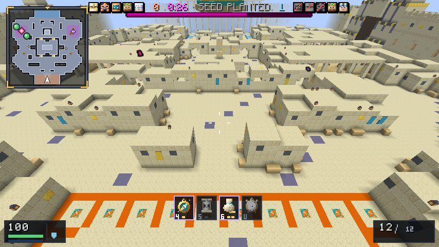
Hourfall in a real match. 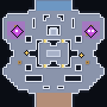
Hourfall
Citadel of Golden Sands · Time Tide gates
Four sand gates ring the Hourglass tower in mid. They open and close in pairs every 30 s on the Citadel clock, with a bell 3 s before. A closed gate forces a long rotation through the side halls.
-
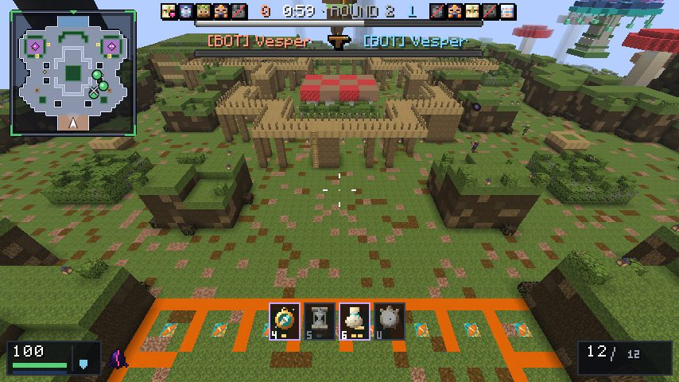
Rootvault in a real match. 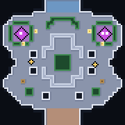
Rootvault
Whispering Grove · Canopy and one-way roots
A canopy bridge loops above mid. Hanging roots drop you from the canopy straight into a site but can never be climbed: fast entries, no retreat. Leaves block sight, not bullets.
-
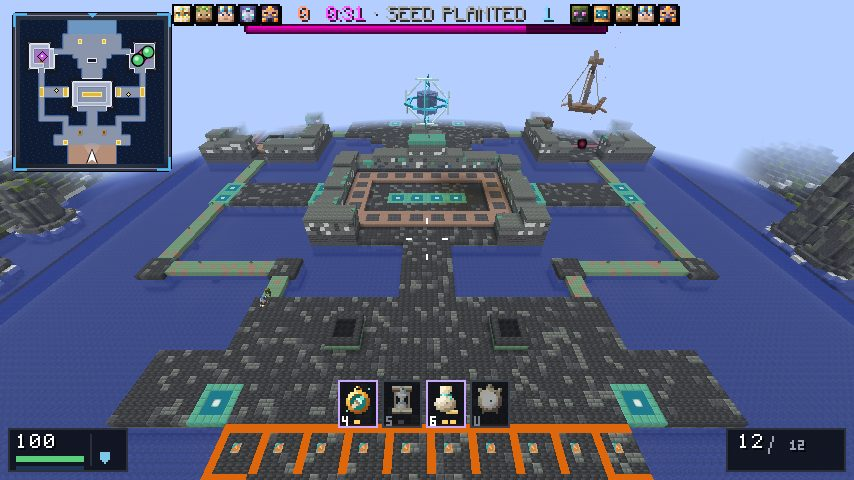
Stormbreak in a real match. 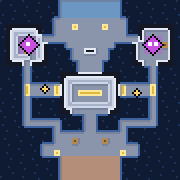
Stormbreak
Tempestuous Archipelago · Wind pads and gusts
Islands joined by narrow bridges. Wind pads launch players from island to island in 2 s; every 45 s a gust shoves everyone on a bridge sideways. Falling into the sea is death.
Fair by design
Agents are never sold, and nothing in the shop changes damage, recoil, sound or what you see.
A weapon skin changes how a gun looks, never how it sounds, hits or reads on screen.
Ready for the first round?
Join on Java Edition 26.3 and walk to the ValoBlock door in the roost, or open the menu with the compass.
play.vampyuyu.win